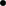

VI Accumulators
When you apply a function f to some argument a, you usually get a value.You may also get a run-time error or the computation may never stop, if f uses generative recursion. We ignore these cases here. We also ignore the random function, which is the only exception to the idea. If you apply f to a again, you get the same result. As a matter of fact, you get the same result no matter how often you request the evaluation of (f a). More generally, when you design a recursive function, you never have to think about the context in which you use the function. Whether the function is applied for the first time or whether the hundredth time, doesn’t matter. The function works according to its purpose statement, and that’s all you need to know as you design its body.
Although this principle of context-independence greatly facilitates the development of functions, it is also the cause of two problems. The general idea is that context-independence induces a loss of knowledge during a recursive evaluation; a function does not “know” whether it is called on a complete list or on a piece of a list. For structurally recursive programs this loss of knowledge means that they have to traverse data more than once, inducing a grave performance cost. For functions that employ generative recursion, the loss means that the function may not be able to compute the result; instead it runs forever. The preceding part illustrates this second problem with a graph traversal function that cannot find a path between two nodes when the graph is circular.
This part introduces a variant of the design recipes in order to address this “loss of context” problem. Since we wish to retain the principle that (f a1 ... aN) returns the same result no matter how often it is evaluated, the new variant of the design recipe clearly demands the addition of an argument that represents the context of the function call. We call this additional argument an accumulator. This part explains how functions with accumulators work. During a recursive traversal, the recursive calls continue to receive new data arguments but they also get new accumulator argument that change in relation to the changes to the other arguments. To design such functions correctly requires proceeding in a logical and systematic manner, and that is the purpose of the accumulator design recipe.
The rest of this chapter is under development. Use HtDP/1e in the meantime.
(define M '((0 4 5) (1 2 3))) (define M1 '((1 2 3) (0 4 5))) (check-expect (rotate-until.v1 M) M1) (define (rotate-until.v1 l0) (local ((define (rotate-until l seen) (cond [(not (= (first (first l)) 0)) (cons (first l) (append seen (rest l)))] [else (rotate-until (rest l) (cons (first l) seen))]))) (rotate-until l0 '()))) (check-expect (rotate-until.v2 M) M1) (define (rotate-until.v2 l) (cond [(not (= (first (first l)) 0)) l] [else (rotate-until.v2 (append (rest l) (list (first l))))])) (define N 10000) (define (run N rotate-until) (local ((define large (append (build-list N (lambda (i) `(0 ,(+ (random (+ i 1)) 1) 0 0))) '((1 2 3 0))))) (time (first (rotate-until large))))) (build-list 10 (lambda (i) (run (* i 1000) rotate-until.v1))) (build-list 10 (lambda (i) (run (* i 1000) rotate-until.v2)))
35 Generative Recursion with Accumulators
35.1 Fractals, a Second Taste
Exercise 395. As mentioned, the right-most image in figure 87 illustrates the generative idea behind the Sierpinski process in a single picture. The given problem is a triangle, that is, three points. Once again, when the triangle is too small to be subdivided any further, the algorithm just draws it. Otherwise, the algorithm finds the midpoints of the three sides and draws the three outer triangles, which implicitly identifies the inner triangle, too.
To translate this description, and especially the partitioning step, into an ISL+ function, it is critical to choose the input data properly. Based on the description, the function consumes three points, each of which is easily represented
obvious choice for a tri
From the perspective of "2htdp/image" drawing a tr
. Let us summarize our discussion with a skeletal ISL+ definition:
; Posn Posn Posn Image -> Image ; adds the triangle (a, b, and c) to s ; if it is small enough (define (sierpinski a b c) (cond [(too-small? a b c) (add-triangle s a b c)] [else (... ...)])) The function consumes three posn structures and returns #t when it is done. The cond expression reflects the general outline of an algorithm. It is our task to define too-small the function that determines whether the problem is trivially solvable, and add-triangle. In addition, we must still add a ISL+ expression that formulates the partitioning of the triangle.The partitioning step requires the function to determine the three mid-points between the three end-points. Let us call these new mid-points a-b, b-c, and c-a. Together with the given endpoints, a, b, and c, they determine four triangles:
a, a-b, c-a;
b, a-b, b-c;
c, c-a, b-c;
a-b, b-c, c-a.
Thus, if we wanted to create the Sierpinski triangle for, say, the first listed triangle, we would use (sierpinski a a-b c-a).Since each midpoint is used twice, we use a local expression to translate the generative step into ISL+. The local expression introduces the three new midpoints. Its body contains three recursive applications of sierpinski and the add-triangle application mentioned earlier. To combine the solutions of the three problems, we use an and expression, which ensures that all three recursions must succeed. Figure 87 collects all the relevant definitions, including two small functions based on domain knowledge from geometry.
Develop the functionsto complete the definitions in figure 87.Use the teachpack "draw.ss" to test the code. For a first test of the complete function, use the following definitions:Create a canvas with (start 400 400). Experiment with other end points and canvas dimensions.
%% —
Exercise 396. The process of drawing a Sierpinski triangle usually starts from an equilateral shape. To compute the endpoints of an equilateral Sierpinski triangle, we can pick a large circle and three points on the circle that are 120 degrees apart. For example, they could be at 0, 120, 240:
(define CENTER (make-posn 200 200)) (define RADIUS 200) ; cicrcl-pt: Number -> Posn ; computes a position on the circle with CENTER ; and RADIUS as defined above (define (circle-pt factor) ...) (define A (circle-pt 1/3)) (define B (circle-pt 2/3)) (define C (circle-pt 1)) Develop the function circle-pt.Hint Recall that DrRacket sin and cos compute the sine and cosine in terms of radians, not degrees. Also keep in mind that on-screen positions grow downwards not upwards.
Exercise 397. Rewrite the function in figure 87 to use structures for the representation of triangles. Then apply the new function to a list of triangles and observe the effect.
—
\treepic The left one is the basic step for the generation of the “Savannah” tree on the right. It is analogous to the picture in the middle of figure 86. Develop a function that draws trees like the one in the right picture.Hint Think of the problem as drawing a straight line, given its starting point and an angle in, say, radians. Then, the generative step divides a single straight line into three pieces and uses the two intermediate points as new starting points for straight lines. The angle changes at each step in a regular manner.
Exercise 399. In mathematics and computer graphics, people must often connect some given points with a smooth curve. One popular method for this purpose is due to Bézier.Dr. Géraldine Morin suggested this exercise. Here is a sequence of pictures that illustrate the idea:—
\bezierpic For simplicity, we start with three points: p1, p2, and p3. The goal is to draw a smooth curve from p1 to p3, viewed from p2. The original triangle is shown on the left; the desired curve appears on the right.To draw the curve from a given triangle, we proceed as follows. If the triangle is small enough, draw it. It appears as a large point. If not, generate two smaller triangles as illustrated in the center picture. The outermost points, p1 and p3, remain the respective outermost points. The replacements for the point in the middle are r2 and q2, which are the midpoints between p1 and p2 and between p2 and p3, respectively. The midpoint between r2 and q2 (marked with ) is the new left-most and right-most endpoint, respectively, for the two new triangles.
To test the function, use the teachpack "draw.ss". Here is some good test data:Use (start 300 200) to create the canvas. Experiment with other positions.